<nav
  class="
    navbar navbar-expand-lg navbar-dark
    bg-dark
    d-flex
    flex-row flex-justify-content-between flex-align-items-center
    p-10
  "
>
  <div routerLink="movies" class="logo">
    
  </div>
  <button class="navbar-toggler" type="button" (click)="toggleNavbar()">
    <span class="navbar-toggler-icon"></span>
  </button>
  <div class="collapse navbar-collapse" [ngClass]="{ show: navbarOpen }">
    <ul class="navbar-nav ml-auto">
      <li routerLink="movies" routerLinkActive="active">Films</li>
      <li
        *ngIf="this.authService.isLoggedIn"
        routerLink="favorites"
        routerLinkActive="active"
      >
        Favoris
      </li>
      <li
        *ngIf="this.authService.isLoggedIn"
        routerLink="movies/new"
        routerLinkActive="active"
      >
        Ajouter un film
      </li>
      <li
        *ngIf="!this.authService.isLoggedIn"
        routerLink="users/login"
        routerLinkActive="active"
      >
        Se connecter
      </li>
      <li
        *ngIf="this.authService.isLoggedIn"
        routerLink="users/profile"
        routerLinkActive="active"
      >
        Mon compte
      </li>
      <li *ngIf="this.authService.isLoggedIn" (click)="logout()">
        Se déconnecter
      </li>
    </ul>
  </div>
</nav>
